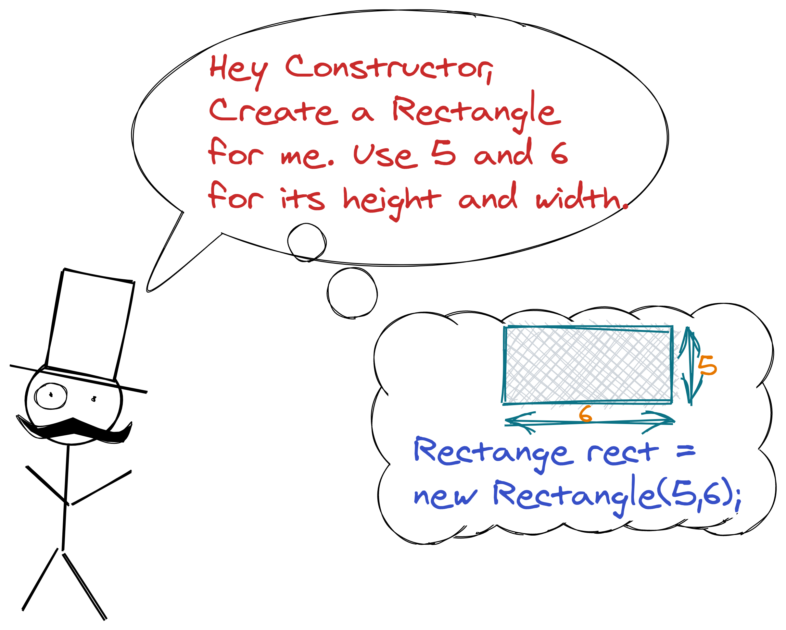
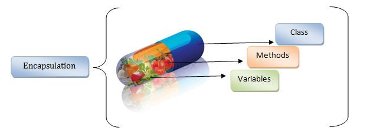
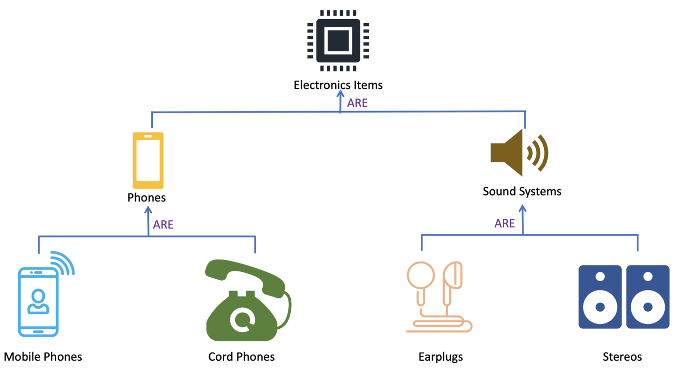
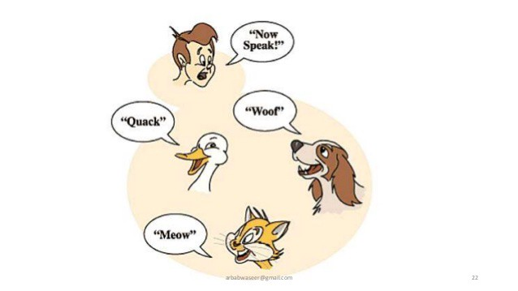
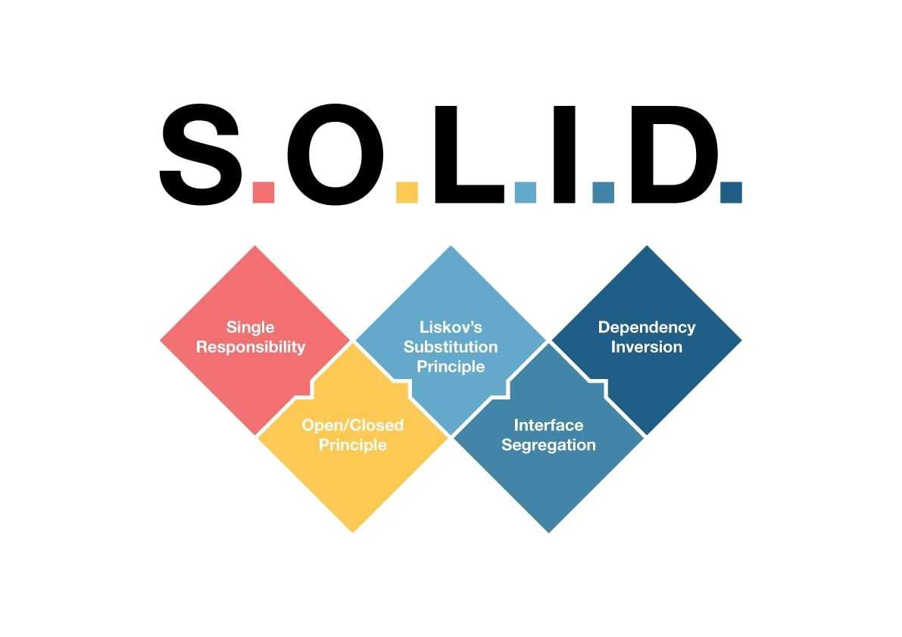

Glossary of OOP terms
Class
Class are a blueprint or a set of instructions to build a specific type of object. It is a basic concept of Object-Oriented Programming which revolve around the real-life entities. Class in Java determines how an object will behave and what the object will contain. The image shows an example of class 'Car'.

Object
An object, in object-oriented programming (OOP), is an abstract data type created by a developer. It can include multiple properties and methods and may even contain other objects. In most programming languages, objects are defined as classes. For example color name, table, bag, barking. The image shows an example of objects in class 'Car' such as 'Audi', 'Nissan', 'Volvo'. When you send a message to an object, you are asking the object to invoke or execute one of its methods as defined in the class.
Instantiation
Instantiation (the noun) in computer science refer to the creation of an object (or an “instance” of a given class) in an OOP language. All objects of this class have a certain set of properties (associated variables), accessories (ways to access those variables), and methods (functions). An instance of that object may then be declared, giving it a unique, named identity so that it may be used in the program.
Namespace
A namespace is a declarative region that provides a scope to the identifiers (the names of types, functions, variables, etc) inside it. Namespaces are used to organize code into logical groups and to prevent name collisions that can occur especially when your code base includes multiple libraries. For example, when a = 2, variable a possesses the address of the object where 2 is stored - and this declarative region is namespace.

Constructor
Constructor is a special function that helps you instantiate an object of a class. Whenever you instantiate an object, a default constructor method is called. A constructor is like an instance method that usually has the same name as the class, and can be used to set the values of the members of an object, either to default or to user-defined values.
Fixture
Fixtures are a powerful tool provided by Pytest which allows you to maintain a fixed and well-known environment for testing. Fixtures in PyTest leverage the idea of dependency injection when your tests get prepared dependencies without taking care of setup and teardown. It’s a very convenient way to create independent tests. Fixtures are basically a set of resources that have to set up before the test starts and have to be cleaned up after the execution of tests is complete.
Type hint
Type hints are used to indicate object types in a programming language. They also explicitly state the type of values returned by functions and classes. This mechanism and coding style is sometimes called “static typing” or “type checking” in programming terminology. Some programming languages enforce type hints and without them, the interpreter or compiler throws errors.Type hints explicitly state object types and they reduce code ambiguity. Type hints can make it much easier to debug code when issues and crashes occur.
Type cast
Typecast is a way of changing an object from one data type to the next. It is used in computer programming to ensure a function handles the variables correctly. A typecast example is the transformation of an integer into a string. This could be used to compare two numbers if one is stored as a string and the other is an integer.
Unit test
Unit testing is a software development process in which the smallest testable parts of an application, called units, are individually and independently scrutinized for proper operation. This testing methodology is done during the development process by the software developers and sometimes QA staff.
Static
Static keyword means that When we declare a member of a class as static it means no matter how many objects of the class are created, there is only one copy of the static member. A static member is shared by all objects of the class. All static data is initialized to zero when the first object is created, if no other initialization is present.
Instance method
Instance method are methods which require an object of its class to be created before it can be called. To invoke a instance method, we have to create an Object of the class in which the method is defined.
Instance property
While defining a property if we didn’t use static keyword which can be called as instance property. Using instance property we can assign value to an instance variable as well as we can retrieve value from instance variable.
Static method
Static methods are the methods in Java that can be called without creating an object of class. They are referenced by the class name itself or reference to the Object of that class.
Static property
While defining a property if we use static keyword then that property is called as static property. Using this property we can assign a value to static variable as well as we can retrieve value from static variable.

Encapsulation
the notion of encapsulation (or OOP Encapsulation) refers to the bundling of data, along with the methods that operate on that data, into a single unit. Many programming languages use encapsulation frequently in the form of classes. A class is a program-code-template that allows developers to create an object that has both variables (data) and behaviors (functions or methods). A class is an example of encapsulation in computer science in that it consists of data and methods that have been bundled into a single unit.

Inheritance
Inheritance is the procedure in which one class inherits the attributes and methods of another class. The class whose properties and methods are inherited is known as the Parent class. And the class that inherits the properties from the parent class is the Child class. The interesting thing is, along with the inherited properties and methods, a child class can have its own properties and methods.

Polymorphism
polymorphism is the ability of a message to be displayed in more than one form. A real-life example of polymorphism, a person at the same time can have different characteristics. Like a man at the same time is a father, a husband, an employee. So the same person posses different behavior in different situations. In computer science, it describes the concept that you can access objects of different types through the same interface.

Abstraction
Abstraction is the concept of object-oriented programming that “shows” only essential attributes and “hides” unnecessary information. The main purpose of abstraction is hiding the unnecessary details from the users. Abstraction is selecting data from a larger pool to show only relevant details of the object to the user. It helps in reducing programming complexity and efforts. It is one of the most important concepts of OOPs.

Overview of SOLID
- S - Single-responsibility Principle
A class should have one and only one reason to change, meaning that a class should have only one job.
- O - Open-closed Principle
Objects or entities should be open for extension but closed for modification.
- L - Liskov Substitution Principle
Let q(x) be a property provable about objects of x of type T. Then q(y) should be provable for objects y of type S where S is a subtype of T.
- I - Interface Segregation Principle
A client should never be forced to implement an interface that it doesn’t use, or clients shouldn’t be forced to depend on methods they do not use.
- D - Dependency Inversion Principle
Entities must depend on abstractions, not on concretions. It states that the high-level module must not depend on the low-level module, but they should depend on abstractions.
Overview of Design Patterns
In software engineering, a design pattern is a general repeatable solution to a commonly occurring problem in software design. A design pattern isn’t a finished design that can be transformed directly into code. It is a description or template for how to solve a problem that can be used in many different situations.
- Benefits
- Design patterns can speed up the development process by providing tested, proven development paradigms.
- Reusing the design patterns helps to prevent subtle issues that can cause major problems and it also improves code readability.
- Design pattern provides general solutions, documented in a format that doesn’t specifics tied to a particular problem.
- Design pattern provides general solutions, documented in a format that doesn’t specifics tied to a particular problem.
- Classification
- Creational design patterns
- Structural design patterns
- Behavioral design patterns
Citations
- https://madasamy.medium.com/introduction-to-object-oriented-design-patterns-part-i
- https://www.digitalocean.com/community/conceptual_articles/s-o-l-i-d-the-first-five-principles-of-object-oriented-design
- https://www.freecodecamp.org/news/object-oriented-programming-concepts-21bb035f7260/